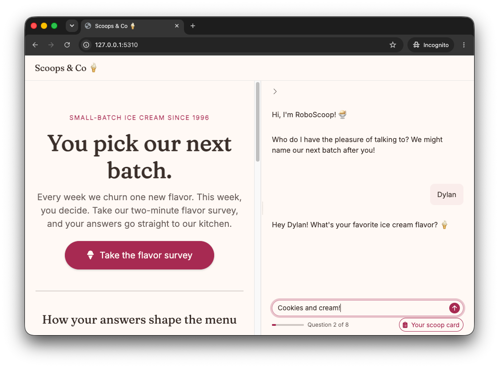

The "chat-sidebar-drawer" example puts a chat survey in
the sidebar of an ice cream shop page. A drawer beside the chat shows
the answers so far.
surveychat::run_example("chat-sidebar-drawer", chat = "anthropic/claude-haiku-4-5")
The web page of the ice cream shop Scoops &
Co, in cream and raspberry pink. A side panel on the right shows the
survey chat. The bot, RoboScoop, greets the user, who gives the name
Dylan, and then asks for their favorite flavor while the user types
Cookies and cream. Below the chat are the progress cue and a Your scoop
card button.
Source: inst/examples/chat-sidebar-drawer/app.R.
The chat in a sidebar
survey_chat_ui() is the chat alone, so it fits in any
layout. Here it fills a closed sidebar on the right, and a button on the
page opens it:
ui <- page_sidebar(
sidebar = sidebar(
id = "survey_sidebar",
position = "right",
fillable = TRUE,
open = "closed",
survey_chat_ui(
"survey",
drawer = shinychat::chat_drawer(title = "Your scoop card", open = FALSE)
)
),
actionButton("open_survey", "Take the flavor survey")
)The survey starts when the user opens the sidebar and the chat first shows on the screen.
The drawer
survey_server(drawer = ) takes a function of the answers
so far. The server calls it after each new answer and at the end, and
puts the result in the drawer:
scoop_card <- function(answers, complete) {
tags$ul(lapply(names(answers), \(id) tags$li(id, ": ", answers[[id]])))
}
server <- function(input, output, session) {
observeEvent(input$open_survey, {
toggle_sidebar("survey_sidebar", open = TRUE)
})
survey_server("survey", survey, chat, con, drawer = scoop_card)
}The drawer stays closed, and its toggle shows after the first answer.
What the survey shows
The eight questions use most of the chat features:
- Choices: The name question has a choice to stay anonymous, and the topping question has LLM ideas for the flavor.
- Generated intro: The visit question starts with a fun fact about the flavor.
- Adaptive question: The LLM writes the last question from the favorite flavor and the menu.
- A yes or no branch: A user who joins the flavor club gets a date picker in the chat for their date of birth.
- Answers given early: A reply such as “mint chip in a cone” also answers how the user likes it served, so the survey does not ask again.
Design a survey explains each feature.